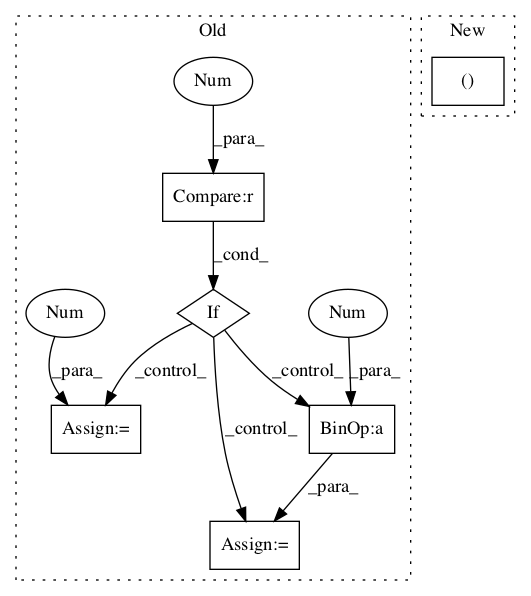

Pattern ID :22

Before Change
qm_count = text.count("?")
qm_amplifier = 0
if qm_count > 1:
if qm_count <= 3:
qm_amplifier = qm_count*0.18
else:
qm_amplifier = 0.96
if sum_s > 0:
sum_s += qm_amplifier
elif sum_s < 0:
sum_s -= qm_amplifier
After Change
compound = normalize(sum_s)
// discriminate between positive, negative and neutral sentiment scores
pos_sum, neg_sum, neu_count = self._sift_sentiment_scores(sentiments)
if pos_sum > math.fabs(neg_sum):
pos_sum += (punct_emph_amplifier)
In pattern: SUPERPATTERN
Frequency: 3
Non-data size: 6
Instances
Fragment ID: 55936
Project Name: nltk/nltk
Commit Name: fa0915dc09754492939ca37b13a9cab041b3e925
Time: 2015-07-13
Author: 24alsecondo@gmail.com
File Name: nltk/sentiment/vader.py
Class Name: SentimentIntensityAnalyzer
Method Name: score_valence
Fragment ID: 55920
Project Name: nltk/nltk
Commit Name: d13da69a9cc16bf785b61e36e6e962ba6c4d7b81
Time: 2015-06-06
Author: 24alsecondo@gmail.com
File Name: nltk/sentiment/vader.py
Class Name: SentimentIntensityAnalyzer
Method Name: score_valence
Fragment ID: 55937
Project Name: nltk/nltk
Commit Name: 62c9c1165f992107b3d33fc7c19097dbc4ccb288
Time: 2001-08-17
Author: edloper@ldc.upenn.edu
File Name: src/nltk/draw_tree.py
Class Name: Window
Method Name: display